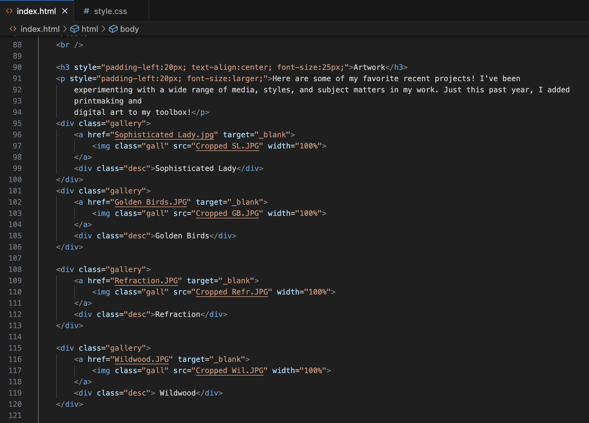

|
|
Background
I've lived in Mentor, Ohio for most of my life. I
always loved making art as a kid, but I didn't realize until last year that I wanted to
pursue an artistic career. I graduated summa cum laude from
Mentor High School,
where I was primarily involved in the art and music departments.
|
|
|
|
Family
I'm lucky enough to be a triplet! I have a sister named Amelia and a
brother named Ben,
which makes
our first
initals ABC! I have two amazing parents who are now home alone with our cats, Lila and
Finn.
|
|

|
Interests
Aside from making art, I have always loved music.
In my senior year, I was in the
symphony,
chamber orchestra, and a quartet! I'm very fortunate to be able to continue playing
violin at
Miami in MUSO! I also enjoy knitting, hiking, and watching movies.
|
|
Here are some of my favorite recent projects! I've been
experimenting with a wide range of media, styles, and subject matters in my work. Just this past year, I added
printmaking and
digital art to my toolbox!
Most of the pieces above were part of my AP drawing portfolio,
which focused
on an investigation of fundamental connections and common building blocks in our world. I was in the top 1.36%
of test takers in 2023 to earn every possible point on the exam! You can check out my complete porfolio here!
…prepare me for a professional setting.
I had the opportunity to shadow a UI/UX designer from STERIS at the end of
my senior year. While
sitting
in on a
cross-disciplinary project meeting, I discovered just how much designers and software developers
must
collaborate. Supplementing my Communication Design major with an applied concentration in ETBD will
undoubtedly prepare me for
that kind of
professional environment in the future.
|
…help me gain a more holistic understanding of design.
When it comes to art, I have always considered myself a "jack of all
trades, master of none." I
can
draw,
paint,
printmake, knit, embroider… you name it! While I used to see this as a weakness, I now
see my
wide range of
interests and talents as my greatest asset. The ETBD program will give me a wealth of new
skills
to add
to my toolbox, enhancing my existing abilities and making me a more capable designer.
|
Complementary classes
The classes offered in the ETBD program will perfectly complement my Communication Design curriculum
so
that I can graduate with a multidisciplinary understanding of design in the modern industry. Whereas
Comm Design will give me a strong studio background, ETBD will prepare me for an increasingly
digital professional landscape. I am still unsure exactly what career path I want to take after
college, but I know ETBD classes geared toward User Experience Research and Digital Art Tools will
equip me to succeed in an array of jobs. Technology is becoming integrated into every facet of our
lives, and I know it is advantageous for me to learn as much about it as I can.
Internship and professional skills
Participating in an internship during my time at Miami is one of my top
priorities, so I was
thrilled to discover that there is a required internship for ETBD students. Because internships are
woven into
the curriculum, I know that I'll get the support and resources I need to connect me with valuable
pre-professional
opportunities. Gaining practical experience as an intern will be crucical in developing my skills
and
preparing me to be a working designer.
Maximizing my time at Miami
I am mainly interested in ETBD because I believe this program will allow me
to get the most out of my
time at Miami. I am aware that adding an applied concentration in ETBD to my Comm Design major will
greatly increase my course load, but I am up for the challenge! I want to create, learn, and accomplish as
much as possible over the next 4 years, and I want ETBD to be part of my experience!
|

I started learning HTML and CSS in order to build this website!
|